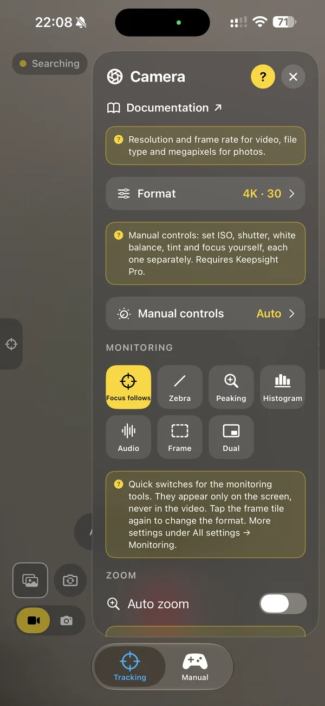

Je onderwerp blijft in beeld.
Keepsight herkent wat je filmt en stuurt je gimbal om het te volgen. Alle herkenning draait op je iPhone.
Lees de documentatieTot 60 seconden gratis filmen. Keepsight zit momenteel in de bètatest en is nog niet beschikbaar in de App Store.Gemaakt voor de grote camera
Keepsight is ontstaan voor één bepaalde opstelling: een stevige gimbal draagt een systeemcamera, bijvoorbeeld een Lumix S1RII die in 8K filmt. De iPhone zit erbovenop. Die herkent het onderwerp en stuurt de gimbal, terwijl de camera eronder de eigenlijke opname maakt.
Zo krijg je een gevolgd shot in de kwaliteit van je beste camera en met je eigen objectieven, zonder zelf te pannen en zonder tweede persoon aan de gimbal.
Foto’s en video’s van de iPhone zelf zijn een extraatje: een tweede hoek, een controlebeeld, of voor de dagen dat de grote camera thuisblijft.
Wat Keepsight voor je doet
Volgen
Kies een onderwerp: persoon, gezicht, vliegtuig, vogel, dier, voertuig, trein of boot. Keepsight houdt het in het midden en stuurt de gimbal. Verdwijnt het vliegtuig achter een wolk, dan volgt de app kort de baan verder.
Zoom
De automatische zoom houdt het onderwerp op de grootte die je instelt. Hij beweegt in minieme stapjes en blijft binnen het gekozen objectief, zodat de video nooit verspringt.
Kadreren
De virtuele gimbal bewaart een tweede video waarvan het kader het onderwerp soepel volgt en vanzelf zoomt. Dat werkt ook uit de hand, zonder gimbal.
Afdrukken
Met Keepsight Pro maakt de app zelf de foto als iedereen lacht, als iedereen in de camera kijkt of als het onderwerp groot genoeg in beeld is. Intervalseries, handgebaren en spraakopdrachten met aftellen horen al bij de gratis versie.
De volledige camera van je iPhone
Zo ziet de app eruit


Gratis proberen, één keer kopen
Met de gratis versie test je alles op mensen. Keepsight Pro ontgrendel je met één aankoop, zonder abonnement. De App Store toont de prijs in jouw valuta.
| Functie | Gratis | Pro |
|---|---|---|
| Persoon en gezicht volgen | ✓ | ✓ |
| Gebaren, spraakopdrachten, aftellen | ✓ | ✓ |
| Automatische zoom en virtuele gimbal | ✓ | ✓ |
| Gimbalbesturing met Apple DockKit | ✓ | ✓ |
| 4K-video en foto’s van 48 MP | ✓ | ✓ |
| Automatisch afdrukken: glimlach, blik, onderwerp | – | ✓ |
| Vliegtuig, vogel, dier, voertuig, trein, boot | – | ✓ |
| Sleep een kader om een willekeurig object | – | ✓ |
| Video tot 60 seconden, met logo | ✓ | ✓ |
| Pro-tracking proberen: 3 × 60 seconden | ✓ | ✓ |
| Opnemen zonder tijdslimiet en zonder logo | – | ✓ |
| Tweede video met kaders en gegevens | – | ✓ |
| Foto’s in ProRAW | – | ✓ |
In de gratis versie zijn video's beperkt tot 60 seconden en dragen ze het Keepsight-logo.
Keepsight gratis proberen
- Video's tot 60 seconden met het Keepsight-logo, zo vaak als je wilt.
- Pro-tracking proberen: 3 sessies van elk 60 seconden, met een Pro-onderwerp naar keuze.
- Test je onderwerp en je gimbal vóór de aankoop.
Keepsight Pro
Eén keer kopen. Blijvend ontgrendelen. Geen terugkerende abonnementskosten.
Keepsight zit momenteel in de bètatest en is nog niet beschikbaar in de App Store.
Gepland voor de lancering in de Zwitserse App Store: CHF 14.90 als eenmalige aankoop tot en met 31 maart 2027, CHF 19.90 vanaf 1 april 2027.
Prijzen in Zwitserse frank gelden voor de Zwitserse App Store. In andere landen toont de App Store de prijs in jouw valuta.
Vragen en antwoorden
Betaal ik één keer of doorlopend?
Eén keer. Keepsight Pro is een eenmalige aankoop, zonder abonnement en zonder terugkerende kosten.
Wat kan ik gratis doen?
Personen en gezichten volgen, gebaren, spraakopdrachten, autozoom en de virtuele gimbal gebruiken, en video's tot 60 seconden met het Keepsight-logo filmen. Je kunt Pro-tracking ook drie keer 60 seconden proberen.
Hoe herstel ik mijn aankoop?
Open in de app het Pro-scherm en kies voor het herstellen van de aankoop. Je moet zijn ingelogd met het Apple Account waarmee je hebt gekocht.
Waarom is de prijs in mijn land anders?
Apple bepaalt de prijs per land en valuta, inclusief belastingen. De prijs die jouw App Store toont, is de prijs die geldt.
Werkt Keepsight zonder internet?
Ja. Detectie en tracking draaien op de iPhone. Internet is alleen nodig voor de aankoop en voor de optionele vluchtgegevens.
Wat gebeurt er met mijn beelden?
Ze blijven op je iPhone. Keepsight heeft geen account, geen reclame en geen analyse.
Neemt Keepsight op met mijn grote camera?
Nee. Keepsight stuurt de gimbal; de camera daarop neemt zelf op. De eigen foto's en video's van Keepsight komen van de iPhone-camera.
Zijn live vluchtgegevens beschikbaar waar ik woon?
Alleen in ondersteunde landen en regio's, en er zijn locatietoegang en internet voor nodig. Momenteel is geen enkele regio goedgekeurd.
Wat je nodig hebt
iPhone
Een iPhone met iOS 17 of nieuwer. Keepsight wordt ontwikkeld en getest op de iPhone 15 Pro Max met drie camera’s.
Gimbal
Voor het volgen een gimbal of standaard met Apple DockKit, zoals de Insta360 Flow 2 Pro, DJI Osmo Mobile 8 of Belkin Auto-Tracking Stand Pro. De FeiyuTech AK4500 voor systeemcamera’s wordt als bèta ondersteund. Camera, automatisch afdrukken, gebaren, spraak en de virtuele gimbal werken ook zonder gimbal.
Talen
De app spreekt 21 talen: Engels, Duits, Frans, Italiaans, Spaans, Portugees, Nederlands, Zweeds, Pools, Russisch, Oekraïens, Turks, Arabisch, Hindi, Indonesisch, Vietnamees, Thai, Japans, Koreaans en Chinees (vereenvoudigd en traditioneel).